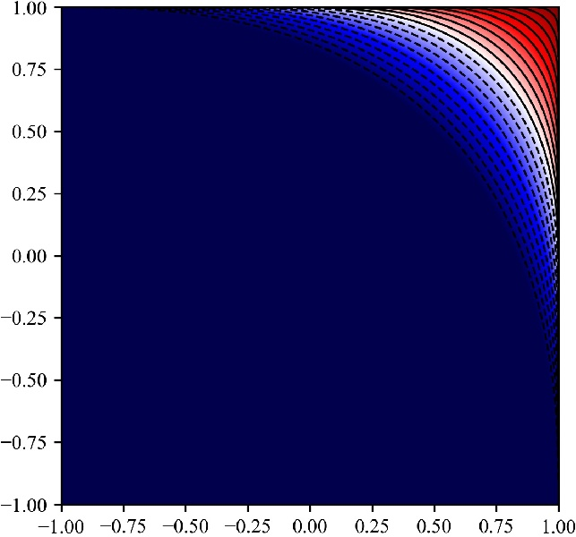
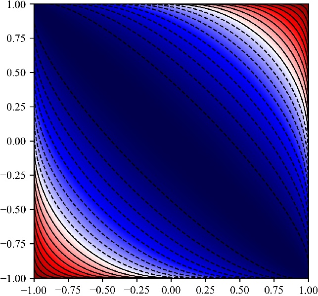
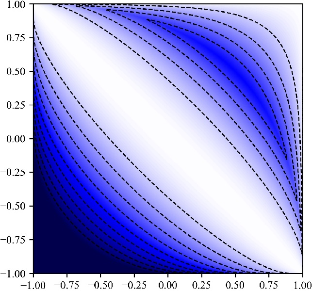
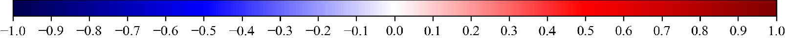

A Triangle Inequality for Cosine Similarity
Erich Schubert
The triangle inequality is integral to many metric pruning techniques in data indexing, as it allows bounding an unknown distance \(d(x,y)\) when the distances to some reference point \(z\) are known: \[ d(x,y) \leq d(x,z) + d(z,y) \] While many distances (such as Euclidean and Manhattan distance) satisfy this, the recently popular cosine similarity does not: \[ \operatorname{sim}_{\text{Cosine}}(\mathbf{x},\mathbf{y}) := \frac{\left<\mathbf{x},\mathbf{y}\right>}{\lVert \mathbf{x}\rVert_2\cdot \lVert \mathbf{y}\rVert_2} =\frac{\sum_i x_iy_i}{\sqrt{\sum_i x_i^2}\cdot \sqrt{\sum_i y_i^2}} =\cos \theta \]
We can transform it to a distance, e.g., using \[ d_{\text{Cosine}}(\mathbf{x},\mathbf{y}) := 1 - \operatorname{sim}(\mathbf{x},\mathbf{y}) \] \[ d_{\text{SqrtCosine}}(\mathbf{x},\mathbf{y}) := \sqrt{2 - 2\operatorname{sim}(\mathbf{x},\mathbf{y})} \] \[ d_{\text{arccos}}(\mathbf{x},\mathbf{y}) := \arccos(\operatorname{sim}(\mathbf{x},\mathbf{y})) \] The (popular) first does not satisfy the triangle inequality. The (uncommon) second is numerically inaccurate. The third is very slow because of the trigonometric functions.
Can we work with cosine similarity directly, without transformation to a distance?
The \(d_{\text{SqrtCosine}}\) distance exploits the known relationship between cosines and squared Euclidean distance, but we obtain a suboptimal bound from this: \[ \operatorname{sim}(\mathbf{x},\mathbf{y}) \geq \operatorname{sim}(\mathbf{x},\mathbf{z}) + \operatorname{sim}(\mathbf{z},\mathbf{y}) - 1 - 2\sqrt{\big(1 - \operatorname{sim}(\mathbf{x},\mathbf{z}))(1 - \operatorname{sim}(\mathbf{z},\mathbf{y})\big)}\]
We can obtain a better bound from the arc lengths instead of chord lengths: \[ \arccos(\operatorname{sim}(\mathbf{x},\mathbf{y})) \leq \arccos(\operatorname{sim}(\mathbf{x},\mathbf{z})) + \arccos(\operatorname{sim}(\mathbf{z},\mathbf{y})) \] can be transformed to \[ \operatorname{sim}(\mathbf{x},\mathbf{y}) \geq \operatorname{sim}(\mathbf{x},\mathbf{z})\cdot \operatorname{sim}(\mathbf{z},\mathbf{y}) - \sqrt{(1-\operatorname{sim}(\mathbf{x},\mathbf{z})^2)\cdot (1-\operatorname{sim}(\mathbf{z},\mathbf{y})^2)} \] and \[ \operatorname{sim}(\mathbf{x},\mathbf{y}) \leq \operatorname{sim}(\mathbf{x},\mathbf{z})\cdot \operatorname{sim}(\mathbf{z},\mathbf{y}) + \sqrt{(1-\operatorname{sim}(\mathbf{x},\mathbf{z})^2)\cdot (1-\operatorname{sim}(\mathbf{z},\mathbf{y})^2)} \]
Pruning power
The arccos-based bounds provide better pruning power than the Euclidean bounds.
  

The bounds obtained this way can be tighter, and hence allow for more pruning:
| d(x,z) | d(z,y) | Euclidean bound | New bound | d(x,z) | d(z,y) | Euclidean bound | New bound | |
|---|---|---|---|---|---|---|---|---|
| 0.50 | 0.50 | ≥ -1 | ≥ -0.5 | 0.50 | 0.95 | ≥ 0.13377 | ≥ 0.20458 | |
| 0.75 | 0.75 | ≥ 0 | ≥ 0.125 | 0.75 | 0.95 | ≥ 0.47639 | ≥ 0.50597 | |
| 0.80 | 0.80 | ≥ 0.2 | ≥ 0.28 | 0.80 | 0.95 | ≥ 0.55 | ≥ 0.57265 | |
| 0.85 | 0.85 | ≥ 0.2 | ≥ 0.28 | 0.85 | 0.95 | ≥ 0.62679 | ≥ 0.64301 | |
| 0.90 | 0.90 | ≥ 0.4 | ≥ 0.445 | 0.90 | 0.95 | ≥ 0.70858 | ≥ 0.71889 | |
| 0.95 | 0.95 | ≥ 0.8 | ≥ 0.805 | 0.95 | 0.95 | ≥ 0.8 | ≥ 0.805 |
Runtime comparison
The multiplicative version is fast to compute, and offers the same accuracy as using the arcus cosines.
| Name | Duration | Std.dev. | Accuracy |
|---|---|---|---|
| Euclidean | 10.361 ns | ±0.139 ns | O |
| Eucl-LB | 10.171 ns | ±0.132 ns | – |
| Arccos | 610.329 ns | ±3.267 ns | ++ |
| Arccos (JaFaMa) | 58.989 ns | ±0.630 ns | ++ |
| Mult (recommended) | 9.749 ns | ±0.096 ns | ++ |
| Mult-LB1 | 10.313 ns | ±0.025 ns | - |
| Mult-LB2 | 8.553 ns | ±0.334 ns | – |
| Baseline (sum) | 8.186 ns | ±0.146 ns | n/a |
Conclusion
With the triangle inequality for cosine similarity, we can now adapt many metric pruning approaches to work with cosine similarity instead of distances. This including many index structures such as cover trees, VP-tree, M-tree, M-index, but also algorithms such as Elkan’s and Hamerly’s accelerated k-means.
Because cosine similarity is very popular in the context of embeddings obtained via deep neural networks, this has many applications, including text and image retrieval.